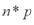
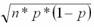
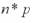
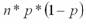
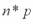
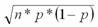
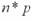
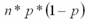
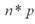
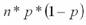

Symmetric about the mean
Bell-shaped curve
Total area under the curve is always one
It is a discrete distribution
Probability that x is equal to any specific value is zero
0.3413
0.4254
0.5746
0.2638
None of the above
90, 110
80.4, 119.6
98.04, 101.96
70, 130
Normal; ; 
Normal; ; 
Exponential; ; 
Exponential; ; 
Hypergeometric; ; 
Not more than 0.10
More than 0.10 but not more than 0.12
More than 0.12 but not more than 0.13
More than 0.13 but not more than 0.14
More than 0.14
More than 0.10 but not more than 0.40
More than 0.40 but not more than 0.60
More than 0.60 but not more than 0.90
More than 0.90
More than 0.10 but not more than 0.30
More than 0.30 but not more than 0.50
More than 0.50 but not more than 0.70
More than 0.70
Staffing for an occupancy level of approximately 63.9%
Staffing for an occupancy level of approximately 69.3%
Staffing for an occupancy level of approximately 75.8%
Staffing for an occupancy level of approximately 78.5%
Staffing for an occupancy level of approximately 85.7%
Not more than 20%
More than 20% but not more than 40%
More than 40% but not more than 60%
More than 60% but not more than 80%
More than 80%
Approximately 198.5 seconds
Approximately 200.5 seconds
Approximately 202.5 seconds
Approximately 204.5 seconds
Approximately 206.5 seconds
This is the end of the test. When you have completed all the questions and reviewed your answers, press the button below to grade the test.